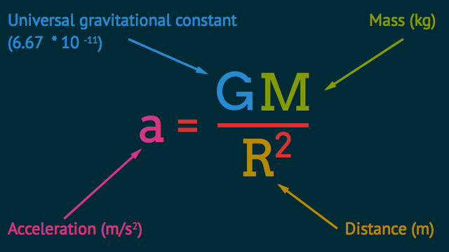
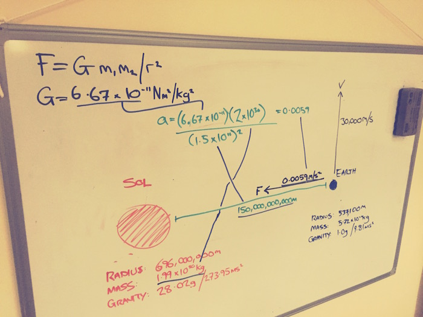
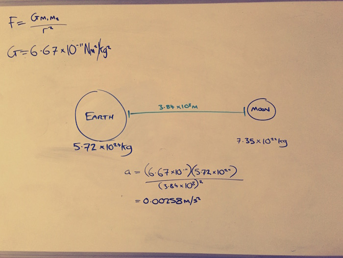
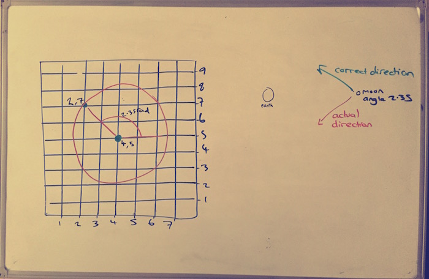
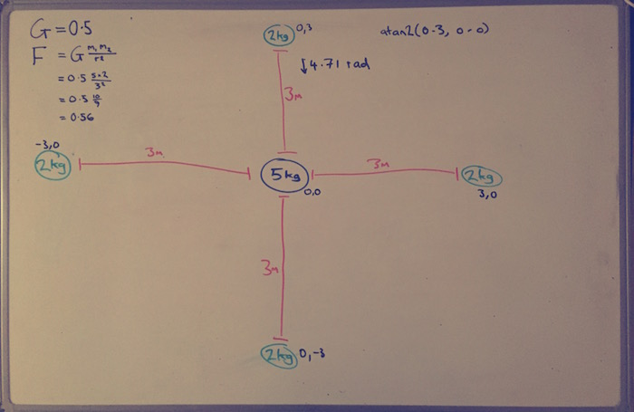

Lost in space
Simulating gravity has made all the other space-related code I’ve written so far for this project seem easy. This has been one of those demoralising problems that you think you’ve solved until you try a new test scenario and suddenly you’re back at square one because it turns out it was never really working right at all. For a good while I genuinely didn’t think I was going to be able to make it work at all.
On the face of it, gravity’s really simple. It’s a tiny little formula that converts a body’s mass and your distance from it into your gravitational acceleration.

At least, it would have been that simple if I’d done a better job of the initial research. My first attempts were using a totally different and wrong equation that I hacked together based on an incomplete understanding of various things I’d hastily skim-read from Google.
I threw a bunch of code together, all excited to see some proper space stuff happening. The first test run felt so climactic that I recorded it. Here it is. Even if you really sucked at physics in school, I promise you’re gonna be able to spot the problem. Check it out.
Yep, it’s backwards. The Earth takes one look at the Sun, turns around, and heads off into deep space. Even worse, the Sun itself seems to be being affected way more than it should by Earth’s comparatively tiny gravitational force.
There were lots more failed attempts shortly after this. Each one was more confusing than the last. I didn’t know what I was doing. I kept making little tweaks to the calculations without really understanding why. No wonder none of them worked.
This went on for a few days. Gradually I started to slow down and get a bit more methodical. Lots of stepping through equations to try to get a feel for the numbers. And yes, I use the word “Sol” instead of just “Sun” in one of the diagrams, purely because it felt more sciencey to write 😎


After a few more days, the gravity calculation was sort of working. It was still miles away from being anything close to correct, but good enough progress to keep me interested.
I thought I was close to nailing it. When I saw it get the Moon to orbit the Earth, I was so happy I took another screen recording. This was around about the same time I discovered that deleting the call to clearRect made it leave behind a cool orbit trail.
Wow, I was so pleased with that. Thing is, I’d had to grossly inflate the mass of the Earth to make it work like that, and I had no idea why. Everything was sort of working, but full of these weird little hacky tweaks that I didn’t know why they helped.
By now I was using the right gravity equation. But I had to subtract the result from 0 to make it work. Again, no idea why. It was just something I did at one point to see if it helped, and it did, so I left it in.
const acceleration = 0 - (
(G * subject.mass) /
(Math.pow(distance, 2))
);
So I definitely had a rude awakening coming. It came when I decided to test it with four Moons orbiting the Earth. They were positioned equidistant around the Earth and initialised with what should have been anti-clockwise orbits of equal sizes. What should happen in this next video is basically the same as in the last one except with four circles instead of one.
Backwards gravity was back, and yet again, I had no idea why. It was demoralising as fuck.
The only thing to do was keep on going and try to get a little bit more serious and careful with each step. The thing about building this is that the gravity calculation is only a tiny part of it. Most of the work so far has gone into the geometry code. You need to be able to calculate angles and distances between points, add vectors together, and calculate vectors from an angle and a magnitude. Lots of Math.atan2 and that sort of thing.
The gravity calculation was okay, so I knew the problem was elsewhere and started digging around accordingly. There was something wrong with how I was applying the gravity to the planets. I started to try to tighten up my understanding of the basic geometry of this imaginary universe I’d built.


Once I understood the basics a little better, I did what I always do when I’m as lost as this: I wrote tests. So many fucking tests… Just, basic things like putting two points next to each other and checking that the distances and angles are being calculated right. I wrote dozens of tests like that.
While I was writing a crapload of tests, I made a few teeny tiny little tweaks along the way. None of it seemed major. Somehow, though, things started working a bit better. I set the “four moons” test case back up, ready to be disappointed and feel stupid.
Almost perfect! This is where I’m at right now, and it’s good enough to consider moving on to whatever the next problem will be. It’s still a long way from perfect, but I haven’t seen any “backwards gravity” and to be honest, that’ll do.
Earth’s orbit around the Sun takes about 10 days longer than it should. And the Moon’s orbit around the Earth takes about half the time it should. Just like before, I haven’t got the slightest idea why. But this project doesn’t really have any explicit goals beyond “build something that makes my computer do some cool space stuff, and have fun doing it”. And it’s doing the cool space stuff well enough to be fun now!